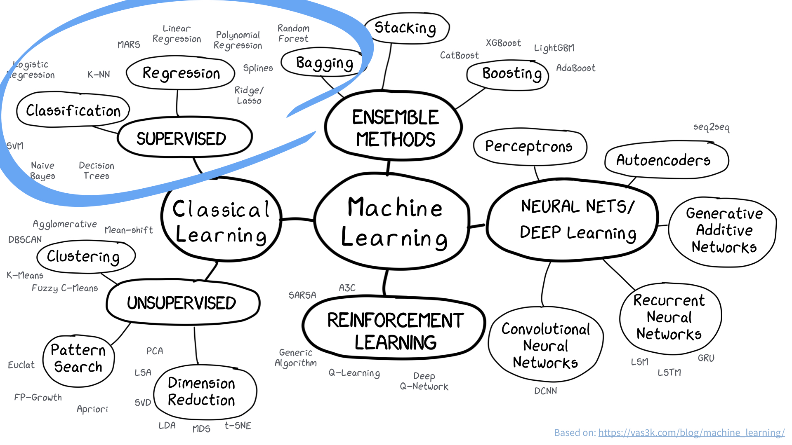
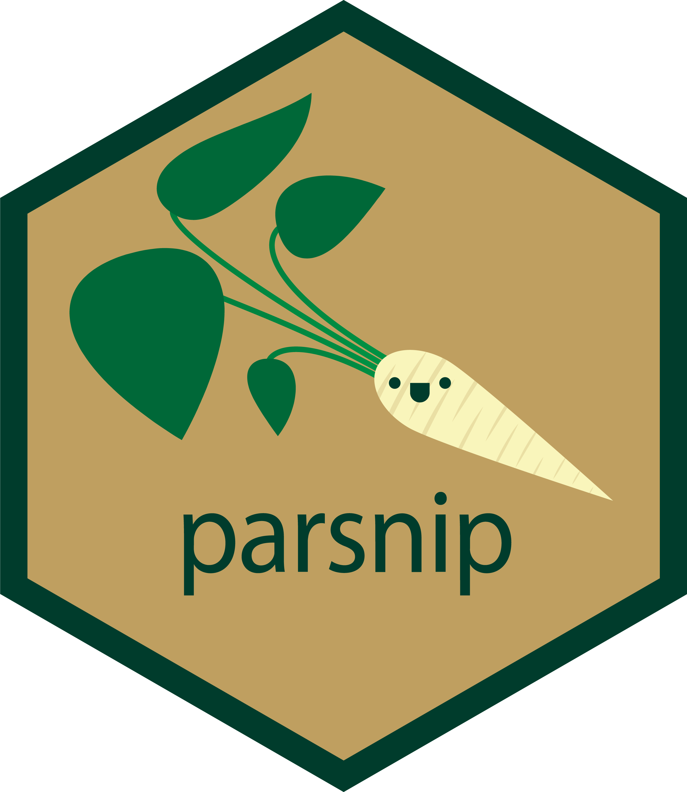
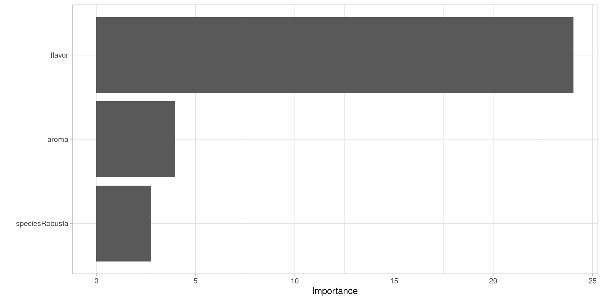
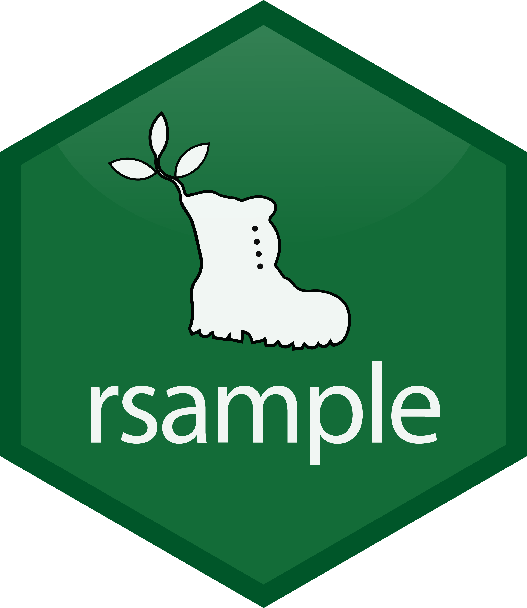
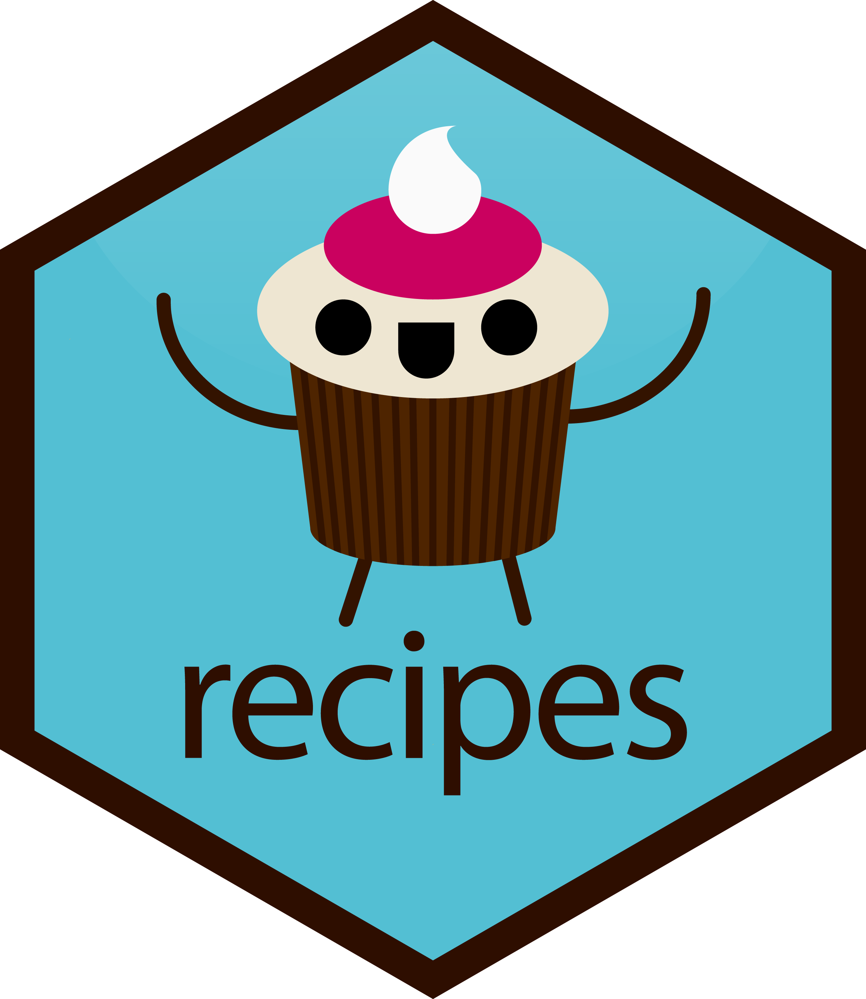
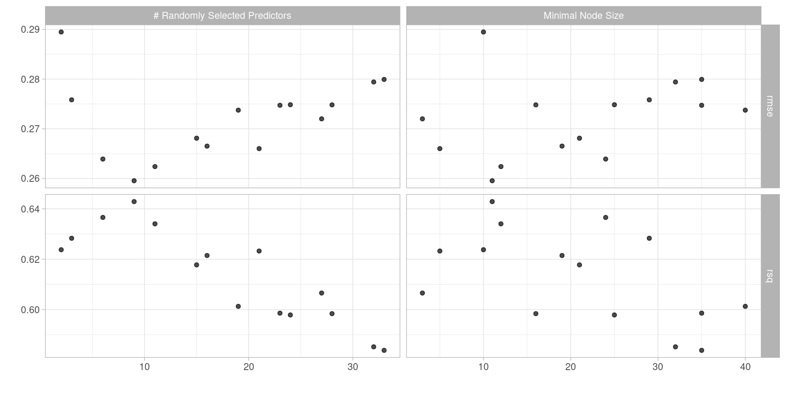
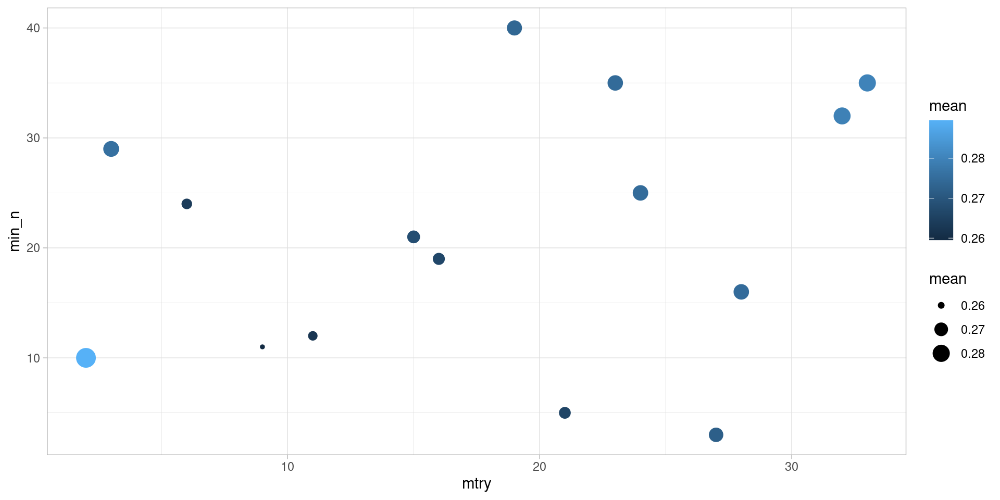

Créer un pipeline de machine learning complet avec [tidymodels]
Julie Aubert, Université Paris-Saclay, AgroParisTech, INRAE, UMR MIA Paris-Saclay & Antoine Bichat (Servier)
Plan
Introduction
Jeu de données
Construire un modèle avec
{parsnip}Pré-traiter les données avec
{recipes}Evaluer son modèle avec
{rsample}et{yardstick}Optimiser les paramètres du modèle avec
{tune}ou{finetune}Construire un ou plusieurs workflows avec
{workflows}et{workflowsets}
Julie Aubert
Ingénieure de recherche en statistiques
- Développement et application de méthodes statistiques en environnement et sciences du vivant
- R, omiques, écologie microbienne
Impliquée dans la communauté R
- Animatrice de StateOftheR
- Maintenance ctv omics
- Membre du comité de pilotage des rencontres R


Contenu du tutoriel
Ce que ce tutoriel n’est pas
Un tutoriel sur R ou sur le tidyverse
Un cours de machine learning ou d’inférence statistique
Contenu du tutoriel
Ce que ce tutoriel n’est pas
Un tutoriel sur R ou sur le tidyverse
Un cours de machine learning ou d’inférence statistique
Ce que ce tutoriel est
- Un tutoriel sur comment utiliser des méthodes de ML dans l’écosystème
{tidymodels}

Machine learning
Ecosystème {tidymodels}
Naviguer dans l’écosystème
Différentes façons de faire
Ajuster un modèle seulement (
{parsnip}).Utiliser un workflow (intégration étapes de pré-traitement et modèlisation) (
{workflows}).Optimiser des hyperparamètres (
{tune},{finetune}).Comparer plusieurs workflows (
{workflowsets}).
Avantages
Format/notation/workflow standardisé pour différents algos/méthodes.
Encapsule les différentes parties (notamment estimation test/train) dans un même objet.
Étapes de prétraitement, choix de modèles, optimisation d’hyperparamètres facilités.
Très modulable, chaque étape correspond à un package.
Packages et options
Données
Jeu de données de dégustation de café Coffee Quality Database, fourni par James LeDoux à partir de pages de revues du Coffee Quality Institute.
Données data_coffee.csv disponibles sur le dépôt GitHub abichat/rr23-tuto-tidymodels.
Objectif
Prédire cupper_points (score de 0 à 10) à partir de variables :
de caractéristiques aromatiques et gustatives (
aroma,flavor,aftertaste…)de caractéristiques des grains (
species,color…)de caractéristiques environnementales (
country,altitude…)
Importation des données
# A tibble: 1,339 × 13
cupper_points aroma flavor aftertaste acidity sweetness species
<dbl> <dbl> <dbl> <dbl> <dbl> <dbl> <chr>
1 8.75 8.67 8.83 8.67 8.75 10 Arabica
2 8.58 8.75 8.67 8.5 8.58 10 Arabica
3 9.25 8.42 8.5 8.42 8.42 10 Arabica
4 8.67 8.17 8.58 8.42 8.42 10 Arabica
5 8.58 8.25 8.5 8.25 8.5 10 Arabica
6 8.33 8.58 8.42 8.42 8.5 10 Arabica
# ℹ 1,333 more rows
# ℹ 6 more variables: country_of_origin <chr>, variety <chr>,
# processing_method <chr>, color <chr>, altitude <dbl>, unit <chr>Exploration des données
Nettoyage des données
coffee <-
coffee_raw %>%
filter(if_all(cupper_points:acidity, ~ . > 4)) %>%
mutate(across(where(is.character), as_factor),
altitude = if_else(unit == "ft", altitude * 0.3048, altitude),
altitude = if_else(altitude > 8000, NA, altitude))
coffee# A tibble: 1,338 × 13
cupper_points aroma flavor aftertaste acidity sweetness species
<dbl> <dbl> <dbl> <dbl> <dbl> <dbl> <fct>
1 8.75 8.67 8.83 8.67 8.75 10 Arabica
2 8.58 8.75 8.67 8.5 8.58 10 Arabica
3 9.25 8.42 8.5 8.42 8.42 10 Arabica
4 8.67 8.17 8.58 8.42 8.42 10 Arabica
5 8.58 8.25 8.5 8.25 8.5 10 Arabica
6 8.33 8.58 8.42 8.42 8.5 10 Arabica
# ℹ 1,332 more rows
# ℹ 6 more variables: country_of_origin <fct>, variety <fct>,
# processing_method <fct>, color <fct>, altitude <dbl>, unit <fct>Spécifier un modèle avec {parsnip}

Crédit : Allison Horst
Spécifier un modèle avec {parsnip}
Un
model(rand_forest(),linear_reg()…)Un
engine(ranger,randomForest…)Un
mode(regression,classification…)Des hyperparamètres (
trees,penalty…)

Tous les modèles
https://www.tidymodels.org/find/parsnip/
Que faire avec {parsnip} ?
Création du modèle
Que faire avec {parsnip} ?
Estimation du modèle
Que faire avec {parsnip} ?
Prédiction
Que faire avec {parsnip} ?
Statistiques et anova de type I
linear_reg(mode = "regression", engine = "lm") %>%
fit(cupper_points ~ aroma + flavor + species, data = coffee) %>%
extract_fit_engine() %>% # besoin d'extraire l'objet lm
summary()
Call:
stats::lm(formula = cupper_points ~ aroma + flavor + species,
data = data)
Residuals:
Min 1Q Median 3Q Max
-2.61088 -0.12361 -0.00840 0.09759 2.94352
Coefficients:
Estimate Std. Error t value Pr(>|t|)
(Intercept) 0.22989 0.19437 1.183 0.23712
aroma 0.14671 0.03684 3.982 7.19e-05 ***
flavor 0.81916 0.03406 24.048 < 2e-16 ***
speciesRobusta 0.15077 0.05469 2.757 0.00592 **
---
Signif. codes: 0 '***' 0.001 '**' 0.01 '*' 0.05 '.' 0.1 ' ' 1
Residual standard error: 0.2858 on 1334 degrees of freedom
Multiple R-squared: 0.5525, Adjusted R-squared: 0.5515
F-statistic: 549.1 on 3 and 1334 DF, p-value: < 2.2e-16Que faire avec {parsnip} ?
Anova de type I en format tidy
linear_reg(mode = "regression", engine = "lm") %>%
fit(cupper_points ~ aroma + flavor + species, data = coffee) %>%
# extract_fit_engine() %>% # pas nécessaire
tidy() # A tibble: 4 × 5
term estimate std.error statistic p.value
<chr> <dbl> <dbl> <dbl> <dbl>
1 (Intercept) 0.230 0.194 1.18 2.37e- 1
2 aroma 0.147 0.0368 3.98 7.19e- 5
3 flavor 0.819 0.0341 24.0 1.91e-106
4 speciesRobusta 0.151 0.0547 2.76 5.92e- 3Que faire avec {parsnip} ?
Importance des variables
Changement de modèle
Rééchantillonnage avec {rsample}
Intérêt principal : éviter le sur-ajustement.
Utilisation ici pour évaluer les performances de modèle dans le cadre d’un jeu “hold-out”
Différents types de rééchantillonnage et classes d’objet associées
class
rsplitpour des rééchantillonnages individuelsclass
rsetpour une collection de rééchantillonnage

Schéma classique

Crédit : Feature Engineering and Selection, Max Kuhn et Kjell Johnson
dans le cas
rset, on parle d’analysiset d’assessmentplutôt que detrainingettestingpas de copie de données modifiées
Dépenser le budget données
Ensembles d’apprentissage et de test
# A tibble: 1,003 × 13
cupper_points aroma flavor aftertaste acidity sweetness species
<dbl> <dbl> <dbl> <dbl> <dbl> <dbl> <fct>
1 8.58 8.75 8.67 8.5 8.58 10 Arabica
2 9.25 8.42 8.5 8.42 8.42 10 Arabica
3 8.67 8.17 8.58 8.42 8.42 10 Arabica
4 8.58 8.25 8.5 8.25 8.5 10 Arabica
5 8.33 8.58 8.42 8.42 8.5 10 Arabica
6 9 8.25 8.33 8.5 8.42 9.33 Arabica
# ℹ 997 more rows
# ℹ 6 more variables: country_of_origin <fct>, variety <fct>,
# processing_method <fct>, color <fct>, altitude <dbl>, unit <fct># A tibble: 335 × 13
cupper_points aroma flavor aftertaste acidity sweetness species
<dbl> <dbl> <dbl> <dbl> <dbl> <dbl> <fct>
1 8.75 8.67 8.83 8.67 8.75 10 Arabica
2 8.5 8.42 8.5 8.33 8.5 10 Arabica
3 8.58 8.33 8.42 8.08 8.25 10 Arabica
4 8.5 8.25 8.33 8.5 8.25 9.33 Arabica
5 8.17 8 8.25 8.08 8.5 10 Arabica
6 8.33 8.08 8.25 8 8.17 10 Arabica
# ℹ 329 more rows
# ℹ 6 more variables: country_of_origin <fct>, variety <fct>,
# processing_method <fct>, color <fct>, altitude <dbl>, unit <fct>Données de validation croisée
# 10-fold cross-validation
# A tibble: 10 × 2
splits id
<list> <chr>
1 <split [902/101]> Fold01
2 <split [902/101]> Fold02
3 <split [902/101]> Fold03
4 <split [903/100]> Fold04
5 <split [903/100]> Fold05
6 <split [903/100]> Fold06
7 <split [903/100]> Fold07
8 <split [903/100]> Fold08
9 <split [903/100]> Fold09
10 <split [903/100]> Fold10Données de validation croisée
first_resample <- cf_cv$splits[[1]]
analysis(first_resample) # premier jeu qui servira pour l'apprentissage# A tibble: 902 × 13
cupper_points aroma flavor aftertaste acidity sweetness species
<dbl> <dbl> <dbl> <dbl> <dbl> <dbl> <fct>
1 8.58 8.75 8.67 8.5 8.58 10 Arabica
2 8.67 8.17 8.58 8.42 8.42 10 Arabica
3 8.58 8.25 8.5 8.25 8.5 10 Arabica
4 9 8.25 8.33 8.5 8.42 9.33 Arabica
5 8.67 8.67 8.67 8.58 8.42 9.33 Arabica
6 8.5 8.08 8.58 8.5 8.5 10 Arabica
# ℹ 896 more rows
# ℹ 6 more variables: country_of_origin <fct>, variety <fct>,
# processing_method <fct>, color <fct>, altitude <dbl>, unit <fct># A tibble: 101 × 13
cupper_points aroma flavor aftertaste acidity sweetness species
<dbl> <dbl> <dbl> <dbl> <dbl> <dbl> <fct>
1 9.25 8.42 8.5 8.42 8.42 10 Arabica
2 8.33 8.58 8.42 8.42 8.5 10 Arabica
3 8.42 8.17 7.83 8 8.08 10 Arabica
4 8 8 8 8 8.08 10 Arabica
5 7.92 7.83 8 8 7.75 10 Arabica
6 8.08 7.75 7.83 7.83 8.17 10 Arabica
# ℹ 95 more rows
# ℹ 6 more variables: country_of_origin <fct>, variety <fct>,
# processing_method <fct>, color <fct>, altitude <dbl>, unit <fct>Prétraitement avec {recipes}

Crédit : Allison Horst
Prétraitement avec {recipes}
Gérer les données manquantes, les erreurs, les données aberrantes.
Créer de nouvelles variables en transformant ou combinant des variables existantes.
Normaliser ou encoder différemment des variables existantes.
Dans un ordre défini par des fonctions
step_*().

Toutes les recettes
https://www.tidymodels.org/find/recipes/
Prétraitement des données
Initialisation de la recette : formule et jeu de données d’entraînement.
Prétraitement des données numériques
Ajout des différentes étapes.
recipe(cupper_points ~ ., data = cf_train) %>%
step_normalize(all_numeric_predictors()) # centre et réduit── Recipe ──────────────────────────────────────────────────────────────────────── Inputs Number of variables by roleoutcome: 1
predictor: 12── Operations • Centering and scaling for: all_numeric_predictors()Prétraitement des données numériques
Estimation des paramètres du prétraitement.
── Recipe ──────────────────────────────────────────────────────────────────────── Inputs Number of variables by roleoutcome: 1
predictor: 12── Training information Training data contained 1003 data points and 326 incomplete rows.── Operations • Centering and scaling for: aroma, flavor, aftertaste, acidity, ... | TrainedPrétraitement des données numériques
Application de la recette sur cf_train.
recipe(cupper_points ~ ., data = cf_train) %>%
step_normalize(all_numeric_predictors()) %>%
prep() %>%
bake(new_data = NULL)# A tibble: 1,003 × 13
aroma flavor aftertaste acidity sweetness species country_of_origin variety
<dbl> <dbl> <dbl> <dbl> <dbl> <fct> <fct> <fct>
1 3.74 3.44 3.17 3.26 0.259 Arabica Ethiopia Other
2 2.70 2.93 2.94 2.75 0.259 Arabica Guatemala Bourbon
3 1.90 3.17 2.94 2.75 0.259 Arabica Ethiopia <NA>
4 2.16 2.93 2.44 3.00 0.259 Arabica Ethiopia Other
5 3.20 2.68 2.94 3.00 0.259 Arabica Brazil <NA>
6 2.16 2.41 3.17 2.75 -1.05 Arabica Ethiopia <NA>
# ℹ 997 more rows
# ℹ 5 more variables: processing_method <fct>, color <fct>, altitude <dbl>,
# unit <fct>, cupper_points <dbl>Prétraitement des données numériques
On vérifie que les données sont centrées-réduites.
recipe(cupper_points ~ ., data = cf_train) %>%
step_normalize(all_numeric_predictors()) %>%
prep() %>%
bake(new_data = NULL) %>%
summarise(across(c(aroma, flavor, aftertaste),
list(mean = mean, sd = sd))) # A tibble: 1 × 6
aroma_mean aroma_sd flavor_mean flavor_sd aftertaste_mean aftertaste_sd
<dbl> <dbl> <dbl> <dbl> <dbl> <dbl>
1 -5.94e-16 1 -1.08e-16 1 -6.80e-16 1Prétraitement des données catégorielles
recipe(cupper_points ~ ., data = cf_train) %>%
step_unknown(all_nominal_predictors()) %>% # transforme les NA en "unknown"
step_dummy(all_nominal_predictors()) %>% # variables binaires exclusives
prep() ── Recipe ──────────────────────────────────────────────────────────────────────── Inputs Number of variables by roleoutcome: 1
predictor: 12── Training information Training data contained 1003 data points and 326 incomplete rows.── Operations • Unknown factor level assignment for: species, ... | Trained• Dummy variables from: species, country_of_origin, variety, ... | TrainedPrétraitement des données catégorielles
recipe(cupper_points ~ ., data = cf_train) %>%
step_unknown(all_nominal_predictors()) %>%
step_dummy(all_nominal_predictors()) %>%
prep() %>%
bake(new_data = NULL) %>%
select(starts_with(c("species", "color")))# A tibble: 1,003 × 6
species_Robusta species_unknown color_Bluish.Green color_None color_Blue.Green
<dbl> <dbl> <dbl> <dbl> <dbl>
1 0 0 0 0 0
2 0 0 0 0 0
3 0 0 0 0 0
4 0 0 0 0 0
5 0 0 1 0 0
6 0 0 0 0 0
# ℹ 997 more rows
# ℹ 1 more variable: color_unknown <dbl>Pré-traitement pour cf_train
cf_rec <-
recipe(cupper_points ~ ., data = cf_train) %>%
update_role(unit, new_role = "notused") %>%
step_unknown(variety, processing_method, country_of_origin,
color, new_level = "unknown") %>%
step_other(country_of_origin, threshold = 0.01) %>%
step_other(processing_method, variety, threshold = 0.1) %>%
step_impute_linear(altitude,
impute_with = imp_vars(country_of_origin)) %>%
step_dummy(all_nominal_predictors()) %>%
step_impute_median(all_numeric_predictors()) %>%
step_normalize(all_numeric_predictors())── Recipe ──────────────────────────────────────────────────────────────────────── Inputs Number of variables by roleoutcome: 1
predictor: 11
notused: 1── Operations • Unknown factor level assignment for: variety and processing_method, ...• Collapsing factor levels for: country_of_origin• Collapsing factor levels for: processing_method and variety• Linear regression imputation for: altitude• Dummy variables from: all_nominal_predictors()• Median imputation for: all_numeric_predictors()• Centering and scaling for: all_numeric_predictors()── Recipe ──────────────────────────────────────────────────────────────────────── Inputs Number of variables by roleoutcome: 1
predictor: 11
notused: 1── Training information Training data contained 1003 data points and 326 incomplete rows.── Operations • Unknown factor level assignment for: variety, ... | Trained• Collapsing factor levels for: country_of_origin | Trained• Collapsing factor levels for: processing_method and variety | Trained• Linear regression imputation for: altitude | Trained• Dummy variables from: species, country_of_origin, variety, ... | Trained• Median imputation for: aroma, flavor, aftertaste, acidity, ... | Trained• Centering and scaling for: aroma, flavor, aftertaste, acidity, ... | Trained# A tibble: 1,003 × 37
aroma flavor aftertaste acidity sweetness altitude unit cupper_points
<dbl> <dbl> <dbl> <dbl> <dbl> <dbl> <fct> <dbl>
1 3.74 3.44 3.17 3.26 0.259 1.58 m 8.58
2 2.70 2.93 2.94 2.75 0.259 0.924 m 9.25
3 1.90 3.17 2.94 2.75 0.259 1.45 m 8.67
4 2.16 2.93 2.44 3.00 0.259 1.58 m 8.58
5 3.20 2.68 2.94 3.00 0.259 -0.431 m 8.33
6 2.16 2.41 3.17 2.75 -1.05 0.811 m 9
# ℹ 997 more rows
# ℹ 29 more variables: species_Robusta <dbl>,
# country_of_origin_Guatemala <dbl>, country_of_origin_Brazil <dbl>,
# country_of_origin_United.States..Hawaii. <dbl>,
# country_of_origin_Indonesia <dbl>, country_of_origin_China <dbl>,
# country_of_origin_Costa.Rica <dbl>, country_of_origin_Mexico <dbl>,
# country_of_origin_Uganda <dbl>, country_of_origin_Honduras <dbl>, …Assembler dans un workflow
Simplifier les étapes en associant le modèle et la recette ensemble.
Un seul objet à manipuler pour différentes étapes :
estimation des paramètres du prétraitement sur l’ensemble d’apprentissage,
estimation des paramètres du modèle sur l’ensemble d’apprentissage,
application du prétraitement sur l’ensemble de test,
prédiction et evaluation du modèle sur l’ensemble de test,
voir plus si validation croisée.
Evaluer son workflow avec {yardstick}
Ensemble de fonctions pour estimer la qualité du modèle.
en entrée : un data frame, la colonne des vraies valeurs et la colonne des prédictions,
en sortie : un data frame avec les différentes métriques demandées.
https://yardstick.tidymodels.org/reference/
Utilisation du workflow
══ Workflow ════════════════════════════════════════════════════════════════════
Preprocessor: Recipe
Model: linear_reg()
── Preprocessor ────────────────────────────────────────────────────────────────
7 Recipe Steps
• step_unknown()
• step_other()
• step_other()
• step_impute_linear()
• step_dummy()
• step_impute_median()
• step_normalize()
── Model ───────────────────────────────────────────────────────────────────────
Linear Regression Model Specification (regression)
Computational engine: lm Utilisation du workflow
══ Workflow [trained] ══════════════════════════════════════════════════════════
Preprocessor: Recipe
Model: linear_reg()
── Preprocessor ────────────────────────────────────────────────────────────────
7 Recipe Steps
• step_unknown()
• step_other()
• step_other()
• step_impute_linear()
• step_dummy()
• step_impute_median()
• step_normalize()
── Model ───────────────────────────────────────────────────────────────────────
Call:
stats::lm(formula = ..y ~ ., data = data)
Coefficients:
(Intercept)
7.508674
aroma
0.011873
flavor
0.163501
aftertaste
0.118719
acidity
0.039276
sweetness
0.010274
altitude
-0.008988
species_Robusta
-0.006244
country_of_origin_Guatemala
-0.034174
country_of_origin_Brazil
-0.014097
country_of_origin_United.States..Hawaii.
-0.028764
country_of_origin_Indonesia
-0.024927
country_of_origin_China
0.003308
country_of_origin_Costa.Rica
-0.004014
country_of_origin_Mexico
-0.004706
country_of_origin_Uganda
-0.006009
country_of_origin_Honduras
-0.013790
country_of_origin_Taiwan
0.002220
country_of_origin_Nicaragua
-0.022671
country_of_origin_Tanzania..United.Republic.Of
-0.001615
country_of_origin_Kenya
-0.021102
country_of_origin_Thailand
-0.013158
country_of_origin_Colombia
...
and 28 more lines.Utilisation du workflow
Utilisation du workflow
Utilisation du workflow
workflow(preprocessor = cf_rec,
spec = linear_reg()) %>%
fit(cf_train) %>%
predict(cf_test) %>%
bind_cols(cf_test)# A tibble: 335 × 14
.pred cupper_points aroma flavor aftertaste acidity sweetness species
<dbl> <dbl> <dbl> <dbl> <dbl> <dbl> <dbl> <fct>
1 8.78 8.75 8.67 8.83 8.67 8.75 10 Arabica
2 8.55 8.5 8.42 8.5 8.33 8.5 10 Arabica
3 8.35 8.58 8.33 8.42 8.08 8.25 10 Arabica
4 8.54 8.5 8.25 8.33 8.5 8.25 9.33 Arabica
5 8.29 8.17 8 8.25 8.08 8.5 10 Arabica
6 8.21 8.33 8.08 8.25 8 8.17 10 Arabica
# ℹ 329 more rows
# ℹ 6 more variables: country_of_origin <fct>, variety <fct>,
# processing_method <fct>, color <fct>, altitude <dbl>, unit <fct>Utilisation du workflow
Avec tune::last_fit()
cf_lf_rf <-
workflow(preprocessor = cf_rec,
spec = rand_forest(mode = "regression")) %>%
last_fit(cf_split)
cf_lf_rf# Resampling results
# Manual resampling
# A tibble: 1 × 6
splits id .metrics .notes .predictions .workflow
<list> <chr> <list> <list> <list> <list>
1 <split [1003/335]> train/test split <tibble> <tibble> <tibble> <workflow>Utiliser son workflow pour faire de la prédiction
- Construction du modèle.
Utiliser son workflow pour faire de la prédiction
Construction du modèle.
Créer une recette de prétraitement.
Utiliser son workflow pour faire de la prédiction
Construction du modèle.
Créer une recette de prétraitement.
Associer modèle et recette dans un workflow.
Utiliser son workflow pour faire de la prédiction
Construction du modèle.
Créer une recette de prétraitement.
Associer modèle et recette dans un workflow.
Entraîner le workflow grâce à un appel à la fonction
fit().
Utiliser son workflow pour faire de la prédiction
Construction du modèle.
Créer une recette de prétraitement.
Associer modèle et recette dans un workflow.
Entraîner le workflow grâce à un appel à la fonction
fit().Utiliser le workflow entraîné pour prédire à partir de données non vues avec
predict().
Utiliser son workflow pour faire de la prédiction
Construction du modèle.
Créer une recette de prétraitement.
Associer modèle et recette dans un workflow.
Entraîner le workflow sur l’ensemble d’entraînement et prédire sur l’ensemble de test avec
last_fit().
Optimiser les hyperparamètres avec {tune}
Certains prétraitements et modèles demandent de choisir des hyperparamètres :
penalty, etmixturepourlinear_reg()trees,mtryetmin_npourrand_forest()thresholdpourstep_other()…
Comment choisir ses hyperparamètres ?
Comment choisir ses hyperparamètres ?
Comment choisir ses hyperparamètres ?
Comment choisir ses hyperparamètres ?
rf_tune <-
rand_forest(mode = "regression", engine = "ranger",
trees = 500, mtry = tune(), min_n = tune())
wkf_rf_tune <- workflow(preprocessor = cf_rec, spec = rf_tune)
wkf_rf_tune══ Workflow ════════════════════════════════════════════════════════════════════
Preprocessor: Recipe
Model: rand_forest()
── Preprocessor ────────────────────────────────────────────────────────────────
7 Recipe Steps
• step_unknown()
• step_other()
• step_other()
• step_impute_linear()
• step_dummy()
• step_impute_median()
• step_normalize()
── Model ───────────────────────────────────────────────────────────────────────
Random Forest Model Specification (regression)
Main Arguments:
mtry = tune()
trees = 500
min_n = tune()
Computational engine: ranger Comment choisir ses hyperparamètres ?
set.seed(345)
res_tune <- tune_grid(wkf_rf_tune, cf_cv, grid = 15,
control = control_grid(verbose = FALSE))
res_tune# Tuning results
# 10-fold cross-validation
# A tibble: 10 × 4
splits id .metrics .notes
<list> <chr> <list> <list>
1 <split [902/101]> Fold01 <tibble [30 × 6]> <tibble [0 × 3]>
2 <split [902/101]> Fold02 <tibble [30 × 6]> <tibble [0 × 3]>
3 <split [902/101]> Fold03 <tibble [30 × 6]> <tibble [0 × 3]>
4 <split [903/100]> Fold04 <tibble [30 × 6]> <tibble [0 × 3]>
5 <split [903/100]> Fold05 <tibble [30 × 6]> <tibble [0 × 3]>
6 <split [903/100]> Fold06 <tibble [30 × 6]> <tibble [0 × 3]>
7 <split [903/100]> Fold07 <tibble [30 × 6]> <tibble [0 × 3]>
8 <split [903/100]> Fold08 <tibble [0 × 6]> <tibble [1 × 3]>
9 <split [903/100]> Fold09 <tibble [30 × 6]> <tibble [0 × 3]>
10 <split [903/100]> Fold10 <tibble [30 × 6]> <tibble [0 × 3]>
There were issues with some computations:
- Error(s) x1: Error in `step_impute_linear()`: Caused by error in `model.frame....
Run `show_notes(.Last.tune.result)` for more information.Comment choisir ses hyperparamètres ?
Comment choisir ses hyperparamètres ?
Comment choisir ses hyperparamètres ?
# A tibble: 5 × 8
mtry min_n .metric .estimator mean n std_err .config
<int> <int> <chr> <chr> <dbl> <int> <dbl> <chr>
1 9 11 rmse standard 0.260 9 0.0322 Preprocessor1_Model12
2 11 12 rmse standard 0.262 9 0.0331 Preprocessor1_Model13
3 6 24 rmse standard 0.264 9 0.0335 Preprocessor1_Model07
4 21 5 rmse standard 0.266 9 0.0324 Preprocessor1_Model15
5 16 19 rmse standard 0.267 9 0.0341 Preprocessor1_Model08Comment choisir ses hyperparamètres ?
Comment choisir ses hyperparamètres ?
══ Workflow ════════════════════════════════════════════════════════════════════
Preprocessor: Recipe
Model: rand_forest()
── Preprocessor ────────────────────────────────────────────────────────────────
7 Recipe Steps
• step_unknown()
• step_other()
• step_other()
• step_impute_linear()
• step_dummy()
• step_impute_median()
• step_normalize()
── Model ───────────────────────────────────────────────────────────────────────
Random Forest Model Specification (regression)
Main Arguments:
mtry = tune()
trees = 500
min_n = tune()
Computational engine: ranger Comment choisir ses hyperparamètres ?
══ Workflow ════════════════════════════════════════════════════════════════════
Preprocessor: Recipe
Model: rand_forest()
── Preprocessor ────────────────────────────────────────────────────────────────
7 Recipe Steps
• step_unknown()
• step_other()
• step_other()
• step_impute_linear()
• step_dummy()
• step_impute_median()
• step_normalize()
── Model ───────────────────────────────────────────────────────────────────────
Random Forest Model Specification (regression)
Main Arguments:
mtry = 9
trees = 500
min_n = 11
Computational engine: ranger Comment choisir ses hyperparamètres ?
Utiliser son workflow pour optimiser ses hyperparamètres
- Créer un workflow avec des paramètres à optimiser dans le modèle et/ou la recette.
Utiliser son workflow pour optimiser ses hyperparamètres
Créer un workflow avec des paramètres à optimiser dans le modèle et/ou la recette.
Entraîner et évaluer le modèles sur les différents jeux de données analysis/assessment de validation croisée avec
tune_grid()ou équivalent.
Utiliser son workflow pour optimiser ses hyperparamètres
Créer un workflow avec des paramètres à optimiser dans le modèle et/ou la recette.
Entraîner et évaluer le modèles sur les différents jeux de données analysis/assessment de validation croisée avec
tune_grid()ou équivalent.Récupérer le workflow ayant la meilleure combinaison d’hyperparamètres avec
select_best()ou équivalent.
Aller plus loin
Gagner du temps dans l’optimisation de ses hyperparamètres avec
{finetune}Comparer plusieurs workflows avec
{workflowsets}24 packages aujourd’hui :
- recettes spécifiques (
{embed},{themis},{scimo}, …) - modèles spécifiques (
{multilevelmod},{modeltime},{poissonreg}…) - modes spécifiques (
{censored}) - travailler avec des données spécifiques (
{textrecipes},{spatialsample}…) - raffinement des pipelines (
{desirability2},{stacks}…)
- recettes spécifiques (
Possibilité d’intégrer :
- sa propre recette
- son propre modèle
- sa propre métrique
Références
Documentation officielle https://www.tidymodels.org
Articles de blog https://www.tidyverse.org/tags/tidymodels
Livre Tidy Modeling with R, Max Kuhn et Julia Silge https://www.tmwr.org (version en ligne gratuite)
Livre Feature Engineering and Selection, Max Kuhn et Kjell Johnson https://bookdown.org/max/FES (version en ligne gratuite)
Sur la dégustation de café https://nomadbarista.com/cupping-cafe-ou-la-degustation-du-cafe/
Traçabilité
─ Session info ───────────────────────────────────────────────────────────────
setting value
version R version 4.3.3 (2024-02-29)
os Ubuntu 22.04.4 LTS
system x86_64, linux-gnu
ui X11
language (EN)
collate fr_FR.UTF-8
ctype fr_FR.UTF-8
tz Europe/Paris
date 2024-04-29
pandoc 3.1.1 @ /usr/lib/rstudio/resources/app/bin/quarto/bin/tools/ (via rmarkdown)
─ Packages ───────────────────────────────────────────────────────────────────
package * version date (UTC) lib source
backports 1.4.1 2021-12-13 [1] CRAN (R 4.3.1)
bit 4.0.5 2022-11-15 [1] CRAN (R 4.3.1)
bit64 4.0.5 2020-08-30 [1] CRAN (R 4.3.1)
broom * 1.0.5 2023-06-09 [1] CRAN (R 4.3.1)
class 7.3-22 2023-05-03 [4] CRAN (R 4.3.1)
cli 3.6.2 2023-12-11 [1] CRAN (R 4.3.2)
codetools 0.2-19 2023-02-01 [4] CRAN (R 4.2.2)
colorspace 2.1-0 2023-01-23 [1] CRAN (R 4.3.1)
corrr * 0.4.4 2022-08-16 [1] CRAN (R 4.3.2)
crayon 1.5.2 2022-09-29 [1] CRAN (R 4.3.1)
data.table 1.14.8 2023-02-17 [1] CRAN (R 4.3.1)
dials * 1.2.0 2023-04-03 [1] CRAN (R 4.3.1)
DiceDesign 1.9 2021-02-13 [1] CRAN (R 4.3.1)
digest 0.6.35 2024-03-11 [1] CRAN (R 4.3.3)
dplyr * 1.1.4 2023-11-17 [1] CRAN (R 4.3.3)
ellipsis 0.3.2 2021-04-29 [1] CRAN (R 4.3.1)
evaluate 0.23 2023-11-01 [1] CRAN (R 4.3.2)
fansi 1.0.6 2023-12-08 [1] CRAN (R 4.3.2)
farver 2.1.1 2022-07-06 [1] CRAN (R 4.3.1)
fastmap 1.1.1 2023-02-24 [1] CRAN (R 4.3.1)
forcats * 1.0.0 2023-01-29 [1] CRAN (R 4.3.1)
foreach 1.5.2 2022-02-02 [1] CRAN (R 4.3.1)
furrr 0.3.1 2022-08-15 [1] CRAN (R 4.3.1)
future 1.33.0 2023-07-01 [1] CRAN (R 4.3.1)
future.apply 1.11.0 2023-05-21 [1] CRAN (R 4.3.1)
generics 0.1.3 2022-07-05 [1] CRAN (R 4.3.1)
ggforce 0.4.1 2022-10-04 [1] CRAN (R 4.3.2)
gghalves 0.1.4 2022-11-20 [1] CRAN (R 4.3.2)
ggplot2 * 3.5.0 2024-02-23 [1] CRAN (R 4.3.3)
ggpp 0.5.5 2023-11-08 [1] CRAN (R 4.3.2)
ggrain 0.0.3 2023-03-03 [1] CRAN (R 4.3.2)
glmnet 4.1-8 2023-08-22 [1] CRAN (R 4.3.2)
globals 0.16.2 2022-11-21 [1] CRAN (R 4.3.1)
glue 1.7.0 2024-01-09 [1] CRAN (R 4.3.2)
gower 1.0.1 2022-12-22 [1] CRAN (R 4.3.1)
GPfit 1.0-8 2019-02-08 [1] CRAN (R 4.3.1)
gtable 0.3.4 2023-08-21 [1] CRAN (R 4.3.1)
hardhat 1.3.0 2023-03-30 [1] CRAN (R 4.3.1)
hms 1.1.3 2023-03-21 [1] CRAN (R 4.3.1)
htmltools 0.5.7 2023-11-03 [1] CRAN (R 4.3.2)
infer * 1.0.5 2023-09-06 [1] CRAN (R 4.3.1)
ipred 0.9-14 2023-03-09 [1] CRAN (R 4.3.1)
iterators 1.0.14 2022-02-05 [1] CRAN (R 4.3.1)
jsonlite 1.8.8 2023-12-04 [1] CRAN (R 4.3.2)
knitr 1.45 2023-10-30 [1] CRAN (R 4.3.2)
labeling 0.4.3 2023-08-29 [1] CRAN (R 4.3.1)
lattice 0.22-5 2023-10-24 [4] CRAN (R 4.3.1)
lava 1.7.3 2023-11-04 [1] CRAN (R 4.3.2)
lhs 1.1.6 2022-12-17 [1] CRAN (R 4.3.1)
lifecycle 1.0.4 2023-11-07 [1] CRAN (R 4.3.2)
listenv 0.9.0 2022-12-16 [1] CRAN (R 4.3.1)
lubridate * 1.9.3 2023-09-27 [1] CRAN (R 4.3.1)
magrittr 2.0.3 2022-03-30 [1] CRAN (R 4.3.1)
MASS 7.3-60.0.1 2024-01-13 [4] CRAN (R 4.3.2)
Matrix 1.6-3 2023-11-14 [1] CRAN (R 4.3.2)
modeldata * 1.2.0 2023-08-09 [1] CRAN (R 4.3.1)
munsell 0.5.1 2024-04-01 [1] CRAN (R 4.3.3)
nnet 7.3-19 2023-05-03 [4] CRAN (R 4.3.1)
parallelly 1.36.0 2023-05-26 [1] CRAN (R 4.3.1)
parsnip * 1.1.1 2023-08-17 [1] CRAN (R 4.3.1)
pillar 1.9.0 2023-03-22 [1] CRAN (R 4.3.1)
pkgconfig 2.0.3 2019-09-22 [1] CRAN (R 4.3.1)
polyclip 1.10-6 2023-09-27 [1] CRAN (R 4.3.1)
polynom 1.4-1 2022-04-11 [1] CRAN (R 4.3.1)
prodlim 2023.08.28 2023-08-28 [1] CRAN (R 4.3.1)
purrr * 1.0.2 2023-08-10 [1] CRAN (R 4.3.1)
R6 2.5.1 2021-08-19 [1] CRAN (R 4.3.1)
ranger * 0.16.0 2023-11-12 [1] CRAN (R 4.3.3)
Rcpp 1.0.12 2024-01-09 [1] CRAN (R 4.3.2)
readr * 2.1.4 2023-02-10 [1] CRAN (R 4.3.1)
recipes * 1.0.8 2023-08-25 [1] CRAN (R 4.3.1)
rlang 1.1.3 2024-01-10 [1] CRAN (R 4.3.2)
rmarkdown 2.25 2023-09-18 [1] CRAN (R 4.3.1)
rpart 4.1.23 2023-12-05 [4] CRAN (R 4.3.2)
rsample * 1.2.0 2023-08-23 [1] CRAN (R 4.3.1)
rstudioapi 0.15.0 2023-07-07 [1] CRAN (R 4.3.1)
scales * 1.3.0 2023-11-28 [1] CRAN (R 4.3.3)
sessioninfo 1.2.2 2021-12-06 [1] CRAN (R 4.3.1)
shape 1.4.6 2021-05-19 [1] CRAN (R 4.3.1)
stringi 1.8.3 2023-12-11 [1] CRAN (R 4.3.3)
stringr * 1.5.1 2023-11-14 [1] CRAN (R 4.3.2)
survival 3.5-8 2024-02-14 [4] CRAN (R 4.3.3)
tibble * 3.2.1 2023-03-20 [1] CRAN (R 4.3.1)
tidymodels * 1.1.1 2023-08-24 [1] CRAN (R 4.3.2)
tidyr * 1.3.1 2024-01-24 [1] CRAN (R 4.3.3)
tidyselect 1.2.1 2024-03-11 [1] CRAN (R 4.3.3)
tidyverse * 2.0.0 2023-02-22 [1] CRAN (R 4.3.2)
timechange 0.2.0 2023-01-11 [1] CRAN (R 4.3.1)
timeDate 4022.108 2023-01-07 [1] CRAN (R 4.3.1)
tune * 1.1.2 2023-08-23 [1] CRAN (R 4.3.1)
tweenr 2.0.2 2022-09-06 [1] CRAN (R 4.3.1)
tzdb 0.4.0 2023-05-12 [1] CRAN (R 4.3.1)
utf8 1.2.4 2023-10-22 [1] CRAN (R 4.3.1)
vctrs 0.6.5 2023-12-01 [1] CRAN (R 4.3.2)
vip 0.4.1 2023-08-21 [1] CRAN (R 4.3.2)
vroom 1.6.4 2023-10-02 [1] CRAN (R 4.3.1)
withr 3.0.0 2024-01-16 [1] CRAN (R 4.3.2)
workflows * 1.1.3 2023-02-22 [1] CRAN (R 4.3.1)
workflowsets * 1.0.1 2023-04-06 [1] CRAN (R 4.3.2)
xfun 0.42 2024-02-08 [1] CRAN (R 4.3.3)
xgboost 1.7.6.1 2023-12-06 [1] CRAN (R 4.3.2)
yaml 2.3.8 2023-12-11 [1] CRAN (R 4.3.2)
yardstick * 1.2.0 2023-04-21 [1] CRAN (R 4.3.1)
[1] /home/jaubert/R/x86_64-pc-linux-gnu-library/4.3
[2] /usr/local/lib/R/site-library
[3] /usr/lib/R/site-library
[4] /usr/lib/R/library
──────────────────────────────────────────────────────────────────────────────Merci pour votre attention !
RLadies Paris –Avril 2024
Comment choisir ses hyperparamètres ?
rand_forest(mode = "regression", trees = 500, mtry = 5, min_n = 5)